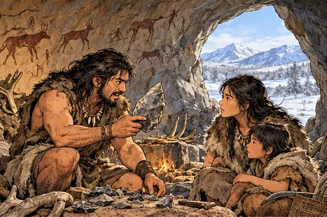
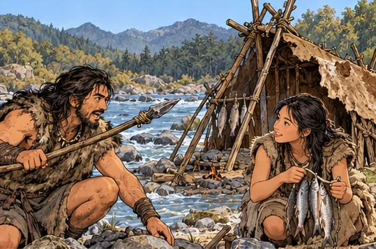
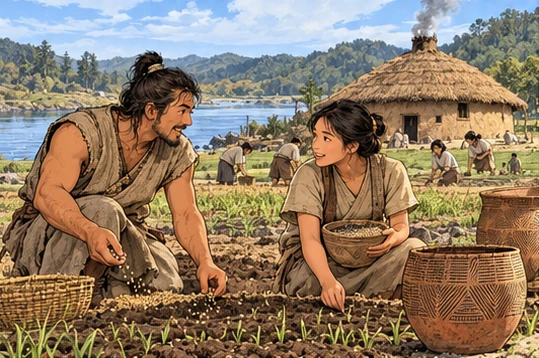
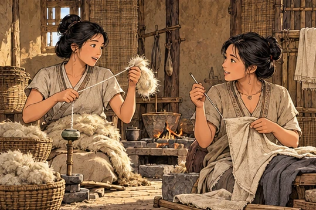
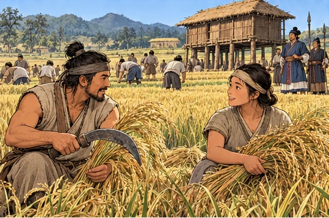
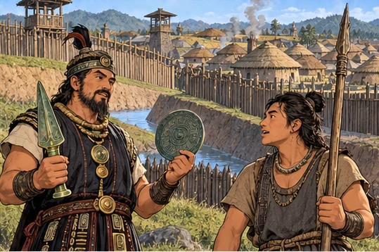
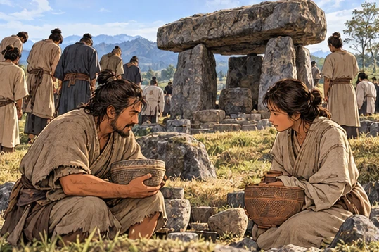
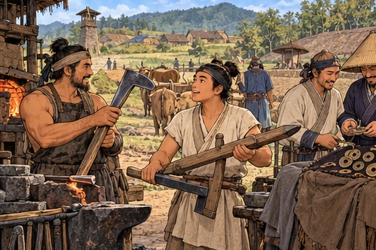

선사시대
떠돌던 사람들은 어떻게 마을을 이루게 됐을까?
- 네 흐름 ① 구석기 → ② 신석기 → ③ 청동기는 생활 모습과 도구로 가르고, ④ 철기는 오답을 가르는 데만 써요.
- 컷마다 시대 → 그림 → 대화 → 설명 → 꼭 기억을 읽어요. 강의가 직접 짚은 말은 ‘강의 강조’로 표시해요.
- 시대가 끝나는 곳마다 ‘이 부분에서 외울 것’으로 생활과 도구를 이어서 정리해요.
① 구석기
먹을 것을 따라 옮겨 다니며 동굴이나 강가의 막집에서 살았고, 돌을 깨서 만든 뗀석기를 썼다.
먹을 것이 떨어졌다
구석기 시대 · 사냥과 채집 → 먹을 것을 따라 이동

개념 그림 · 실제 유적이나 유물 사진이 아니에요.
학습용 요약 대화 · 선사시대 사람의 실제 말이 아니에요. ‘해설’은 오늘날의 설명이에요.
아버지 · 설명용 인물이제 먹을 게 없어. 강 쪽으로 옮기자.
아이 · 설명용 인물그럼 주먹도끼부터 챙길게!
- 배경구석기 사람들은 열매를 따고 짐승을 사냥하며 먹을 것을 구했다.
- 전개주변의 먹을 것이 떨어지면 다른 곳으로 옮겨 다니는 이동 생활을 했다.
- 결과자기 집 없이 옮겨 다녀서 주로 동굴이나 강가의 막집에서 지냈다.
구석기 = 이동 생활·동굴·뗀석기
강의 강조선사시대는 각 시대의 생활 모습과 사용한 도구만 알면 된다고 짚었어요.
오늘의 집은 강가
구석기 · 강가의 막집 · 뗀석기(주먹도끼 · 슴베찌르개)

개념 그림 · 실제 유적이나 유물 사진이 아니에요.
학습용 요약 대화 · 선사시대 사람의 실제 말이 아니에요. ‘해설’은 오늘날의 설명이에요.
아버지 · 설명용 인물이 슴베찌르개를 자루에 끼워 봐.
아이 · 설명용 인물사냥이 끝나면 또 다른 곳으로 가요?
- 도구돌을 깨뜨리거나 떼어 내 만든 뗀석기를 썼다.
- 대표대표 유물은 주먹도끼와 슴베찌르개다. 슴베찌르개는 자루에 끼워 쓰는 사냥 도구다.
- 집강 근처에 막집을 짓고 잠시 머물다 다시 옮겨 갔다.
구석기 = 막집·주먹도끼·슴베찌르개
깨서 만든 도구가 남은 자리
구석기 정리 · 뗀석기 · 다른 시대와 가르기
개념 그림 · 실제 유적이나 유물 사진이 아니에요.
그림: ‘오늘의 집은 강가’ 장면과 같은 그림 전체를 확대하지 않고 다시 썼어요.
학습용 요약 대화 · 선사시대 사람의 실제 말이 아니에요. ‘해설’은 오늘날의 설명이에요.
아버지 · 설명용 인물주먹도끼도 찍개도 돌을 깨서 만들었지.
해설 · 오늘의 유적 안내구석기 유적으로 연천 전곡리와 공주 석장리가 있어요.
- 도구주먹도끼와 찍개도 돌을 깨서 만든 뗀석기다.
- 구분움집·빗살무늬 토기·농경은 신석기의 것이라 구석기와 섞지 않는다.
구석기 유적 = 연천 전곡리·공주 석장리 / 움집·빗살무늬 토기·농경은 구석기 아님
강의 강조유적지를 몰라도 문제를 풀 수 있고, 생활 모습과 도구만 알면 된다고 짚었어요.
유적지 · 강의가 몰라도 된다고 한 범위
구석기 유적: 연천 전곡리, 공주 석장리, 청원 두루봉 동굴, 단양 금굴.
② 신석기
농경과 목축을 시작하면서 한곳에 머물러 움집에서 살았고, 옷을 만들기 시작했다.
씨앗을 심고 머물다
신석기 시대 · 농경과 목축 시작 → 정착 → 움집

개념 그림 · 실제 유적이나 유물 사진이 아니에요.
학습용 요약 대화 · 선사시대 사람의 실제 말이 아니에요. ‘해설’은 오늘날의 설명이에요.
농부 · 설명용 인물여기에 뿌린 씨가 다시 자랐어!
동료 · 설명용 인물남은 곡식은 빗살무늬 토기에 담자.
- 배경신석기 사람들은 농경과 목축을 시작해 조·피·수수 같은 곡식을 길렀다.
- 전개농사를 지으려면 한곳에 머물러야 해서 정착 생활을 하게 되었다.
- 결과땅을 파고 지은 움집에서 살았고, 곡식은 빗살무늬 토기에 담아 저장했다.
신석기 = 농경·목축 시작·움집·빗살무늬 토기
강의 강조신석기에서 제일 중요한 특징은 농사(농경·목축)를 시작했다는 것이라고 짚었어요.
실과 옷이 생기다
신석기 · 가락바퀴로 실 → 뼈바늘로 옷 · 간석기

개념 그림 · 실제 유적이나 유물 사진이 아니에요.
학습용 요약 대화 · 선사시대 사람의 실제 말이 아니에요. ‘해설’은 오늘날의 설명이에요.
직조인 · 설명용 인물가락바퀴로 실을 뽑았어.
동료 · 설명용 인물그럼 뼈바늘로 옷을 꿰매 볼게.
- 옷가락바퀴로 실을 꼬고 뼈바늘로 꿰매 옷을 만들기 시작했다.
- 도구돌을 갈아 만든 간석기를 썼고, 갈돌과 갈판으로 곡식을 갈았다.
신석기 = 가락바퀴·뼈바늘·갈돌·갈판
강의 강조옷을 만들기 시작한 것도 신석기의 중요한 특징이고, 신석기는 빗살무늬 토기와 가락바퀴 두 가지만 알면 된다고 짚었어요.
화덕을 둘러싼 둥근 움집
신석기 · 원형 움집 · 중앙 화덕 · 원시 신앙
개념 그림 · 실제 유적이나 유물 사진이 아니에요.
그림: ‘씨앗을 심고 머물다’ 장면과 같은 그림 전체를 확대하지 않고 다시 썼어요.
학습용 요약 대화 · 선사시대 사람의 실제 말이 아니에요. ‘해설’은 오늘날의 설명이에요.
어머니 · 설명용 인물움집 한가운데 화덕을 두니 따뜻해.
해설 · 오늘의 유적 안내서울 암사동에서 이런 신석기 마을 유적이 발견되었어요.
- 집신석기의 움집은 바닥이 둥글고 한가운데에 화덕을 두었다.
- 신앙샤머니즘·토테미즘·애니미즘 같은 원시 신앙도 이때 생겨났다.
신석기 = 원형 움집·중앙 화덕·갈돌·갈판 / 대표 유적 서울 암사동
강의 강조신석기 유적지도 몰라도 된다고 짚었어요.
유적지 · 강의가 몰라도 된다고 한 범위
신석기 유적: 서울 암사동, 제주 고산리, 양양 오산리, 부산 동삼동.
③ 청동기
벼농사로 생산이 늘자 사유 재산과 계급이 생겼고, 지배층은 청동 물건과 고인돌로 권위를 드러냈다.
남는 곡식, 다른 자리
청동기 시대 · 벼농사 → 생산 증가 → 사유 재산 → 계급

개념 그림 · 실제 유적이나 유물 사진이 아니에요.
학습용 요약 대화 · 선사시대 사람의 실제 말이 아니에요. ‘해설’은 오늘날의 설명이에요.
농부 · 설명용 인물반달 돌칼로 벼를 다 거뒀어.
동료 · 설명용 인물저 집은 곡식 창고가 더 크네.
- 배경청동기 시대에는 신석기의 조·피·수수에 더해 쌀을 기르는 벼농사가 시작되었다.
- 전개생산량이 늘자 남는 곡식을 차지한 사람이 생겨 사유 재산이 생겼다.
- 결과가진 것의 차이가 커지며 계급이 생기고 지배층이 나타났다.
- 도구벼를 거둘 때는 돌로 만든 반달 돌칼을 썼다.
청동기 = 벼농사·사유 재산·계급·반달 돌칼
마을에 울타리를 두르다
청동기 · 환호와 목책 · 비파형 동검 · 민무늬 토기

개념 그림 · 실제 유적이나 유물 사진이 아니에요.
학습용 요약 대화 · 선사시대 사람의 실제 말이 아니에요. ‘해설’은 오늘날의 설명이에요.
지도자 · 설명용 인물창고 둘레에 환호와 목책을 두르자.
전사 · 설명용 인물비파형 동검은 의식 때 들겠습니다.
- 배경마을마다 다른 마을의 침략을 막아야 했다.
- 전개마을 둘레에 도랑인 환호를 파고 나무 울타리인 목책을 둘렀다.
- 함께비파형 동검 같은 청동 물건은 지배층의 권위를 보여 주었고, 그릇으로는 민무늬 토기를 썼다.
청동기 = 환호·목책·비파형 동검·민무늬 토기
강의 강조환호와 목책이 나오면 청동기라고 짚었어요.
지배자가 든 청동 거울
청동기 · 비파형 동검 · 거친무늬 거울 · 농경문 청동기
개념 그림 · 실제 유적이나 유물 사진이 아니에요.
그림: ‘마을에 울타리를 두르다’ 장면과 같은 그림 전체를 확대하지 않고 다시 썼어요.
학습용 요약 대화 · 선사시대 사람의 실제 말이 아니에요. ‘해설’은 오늘날의 설명이에요.
족장 · 설명용 인물비파형 동검과 거친무늬 거울은 내 힘의 표시다.
해설 · 오늘의 유적 안내부여 송국리 같은 마을 유적에서는 민무늬 토기가 나와요.
- 권위비파형 동검과 거친무늬 거울은 지배층이 권위를 보이는 물건이었다.
- 기록당시 생활 모습을 새긴 농경문 청동기도 이 시대의 유물이다.
- 구분청동은 지배층의 무기와 의례 도구에 쓰였고, 벼를 거두는 도구는 돌로 만든 반달 돌칼이었다.
청동기 = 비파형 동검·거친무늬 거울(지배층) / 민무늬 토기 / 대표 유적 부여 송국리
유적지 · 강의가 몰라도 된다고 한 범위
청동기 유적: 부여 송국리(환호·목책 흔적), 울산 울주 반구대 바위그림(신석기·청동기의 생활 모습을 바위에 새김).
큰 돌 아래 남은 권력
청동기 · 지배층의 무덤 고인돌

개념 그림 · 실제 유적이나 유물 사진이 아니에요.
학습용 요약 대화 · 선사시대 사람의 실제 말이 아니에요. ‘해설’은 오늘날의 설명이에요.
마을 사람 · 설명용 인물저 고인돌을 세우는 데 온 마을이 모였어.
동료 · 설명용 인물지배층의 힘이 이렇게 드러나는군.
- 배경계급이 생기면서 지배층이 마을을 이끌었다.
- 전개많은 사람을 모아 큰 돌로 지배층의 무덤인 고인돌을 세웠다.
- 결과큰 무덤을 만들 만큼 사람을 부릴 수 있는 지배층의 힘이 드러났다.
청동기 = 고인돌·지배층의 등장
④ 철기 (오답 가르기)
철기는 시험에서 주로 오답 선택지로 나온다. 특징만 알아 두고 구석기·신석기·청동기와 가른다.
쇠가 밭에 들어오다
철기 시대 · 철제 농기구 · 세형 동검 · 중국 화폐

개념 그림 · 실제 유적이나 유물 사진이 아니에요.
학습용 요약 대화 · 선사시대 사람의 실제 말이 아니에요. ‘해설’은 오늘날의 설명이에요.
대장장이 · 설명용 인물철로 만든 호미와 쇠스랑이야.
농부 · 설명용 인물밭일이 빨라졌네. 교역도 커지겠어!
- 농사호미·쇠스랑·괭이 같은 철제 농기구를 만들어 썼다.
- 청동비파형 동검과 달리 한반도만의 모양인 세형 동검을 거푸집으로 만들었다.
- 교역명도전·반량전 같은 중국 화폐가 발견되어 중국과 교역했음을 알 수 있다.
철기 = 철제 농기구·세형 동검·중국 화폐 교역
강의 강조철기는 주로 오답 선택지로 나오니, 구석기·신석기·청동기 위주로 보라고 짚었어요.
철은 농사, 청동은 의례
철기 · 철제 농기구(생산) · 세형 동검 · 잔무늬 거울 · 명도전
개념 그림 · 실제 유적이나 유물 사진이 아니에요.
그림: ‘쇠가 밭에 들어오다’ 장면과 같은 그림 전체를 확대하지 않고 다시 썼어요.
학습용 요약 대화 · 선사시대 사람의 실제 말이 아니에요. ‘해설’은 오늘날의 설명이에요.
상인 · 설명용 인물중국 돈 명도전이 이 마을까지 왔어.
대장장이 · 설명용 인물청동은 세형 동검·잔무늬 거울로 쓰지.
- 정리철은 농기구로 생산에 쓰였고, 청동은 세형 동검·잔무늬 거울처럼 의례에 쓰였다.
- 구분청동기 시대의 비파형 동검·거친무늬 거울과 철기 시대의 세형 동검·잔무늬 거울을 짝지어 가른다.
철기 = 철제 농기구(생산) / 세형 동검·잔무늬 거울(철기 시대의 청동기) / 명도전 = 중국과 교류
흐름 보충 · 무덤과 화폐
철기 시대에는 독무덤·널무덤을 만들었고, 오수전 같은 중국 화폐도 쓰였다.
구석기 이동·뗀석기 → 신석기 농경 시작·정착 → 청동기 벼농사·계급 → 철기 생산·교역(주로 오답)
다 읽었다면 퀴즈로 확인하기 →